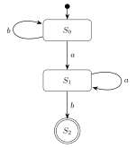
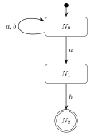
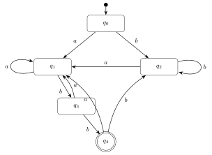
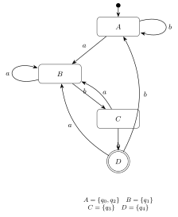
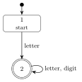
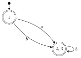
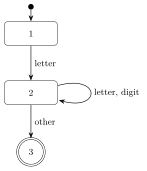
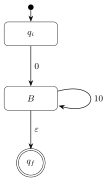
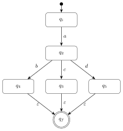

CSCI415 — Compiler Design: Midterm Master Notes
This is a single-source revision document for Lectures 1–6. Each lecture is explained from first principles (assuming this is your first time), then followed by exam traps, worked examples, and visual diagrams.
- Read the lecture sections in order first (they build on each other).
- Then drill the MCQ bank and Written bank at the end.
- The Cram Sheet is for the last hour before the exam.
- Slide references like (L3 s.21) tell you where the point came from.
A compiler turns characters into tokens (lexical analysis, Lectures 2–3), then checks that the tokens form legal structure using a grammar (syntax analysis, Lectures 4–6). The midterm covers the front end: scanner + parser foundations.
Contents
- Lecture 1 — Introduction to Compilers
- Lecture 2 — Lexical Analysis I
- Lecture 3 — Lexical Analysis II (DFA, Minimization, Code, State Elimination)
- Lecture 4 — Syntax Analysis I (CFGs and Recursion)
- Lecture 5 — Syntax Analysis II (Parse Trees, AST, Ambiguity)
- Lecture 6 — Syntax Analysis III (Top-Down / LL(1) Parsing)
- Cram Sheet — Definitions, Algorithms, Templates
- MCQ Bank (with answer key)
- Written-Exam Bank (with model answers)
- Top 25 Mistakes That Cost Marks
- Three-Day Revision Plan
0. Exam map: what the midterm can ask
| Lecture | Topic | Typical MCQ | Typical written question |
|---|---|---|---|
| 1 | Compiler definition, phases, language processing system, compiler vs interpreter | "Which component does X?", ordering of phases | Describe the phases / differentiate compiler & interpreter |
| 2 | Lexeme, token, pattern; automata; regular expressions | Identify tokens/lexemes; regex language | Write a regex for a described language |
| 3 | DFA/NFA, minimization, table-driven DFA, state elimination | Which states merge? What does T[state,ch] do? |
Minimize a DFA; DFA → RE; RE → NFA → DFA |
| 4 | CFG, derivations, recursion | Which grammar generates L? Left/right recursion | Derive a string; design a CFG; convert regex → CFG |
| 5 | Parse trees, AST, ambiguity, precedence, dangling else | Which tree is correct? Is G ambiguous? | Show ambiguity; rewrite unambiguous grammar; dangling else |
| 6 | Top-down parsing, LL(1), parse table, stack trace | LL(1) meaning; next parser action; error detection | Build LL(1) table; trace input; detect error |
Final 25%, Midterm 15%, lecture contribution 5%, quizzes 15% (best 2 of 3), assignments 10%, lab tasks 10%, project 20%. Percentages may change, but the midterm is 15% — treat the written part as the place marks are really separated.
1. Lecture 1 — Introduction to Compilers
1.1 What is a compiler?
A compiler is a program that translates a program written in a source language into an equivalent program in a target language.
The key word is equivalent: the output must compute the same thing, not merely "look similar". Usually:
- Source language = high-level (C, C++, Java, …)
- Target language = low-level (assembly or machine code)
High-level vs low-level languages
| High-level | Low-level |
|---|---|
| Human-readable, portable | Machine-oriented, tied to hardware |
if, loops, functions, objects |
registers, jumps, memory addresses |
| Needs translation | Directly executable (after assembly/linking) |
A CPU only understands machine instructions. The compiler is the bridge between what humans want to write and what the machine can execute.
1.2 Execution process of a C program
This is the language processing system in action. Know the order and the output of each stage.
P-C-A-L-L: Preprocessor → Compiler → Assembler → Linker → Loader. The compiler itself does not produce the final executable — the linker does.
The five stages in detail (L1 s.23–28)
| Stage | Input → Output | What it does |
|---|---|---|
| 1. Preprocessor | Source → preprocessed source | Deletes comments, includes other files (#include), performs macro substitution (#define). Required by some languages (C) or added later. |
| 2. Compiler | Preprocessed code → assembly | Translates to assembly language, reveals bugs/errors, outputs target assembly code. |
| 3. Assembler | Assembly → object file | Translates assembly into machine code. The object file contains machine instructions plus the data needed to place them in memory. |
| 4. Linker | Object files + libraries → executable | Links and merges object files, searches/locates referenced routines, determines memory locations, and makes references absolute. |
| 5. Loader | Executable → memory | Part of the OS. Loads programs/libraries into memory, calculates program size, allocates memory, initializes registers, starts execution. |
- Linker resolves external references between object files (e.g., your
maincallingprintf). - Loader puts the already-linked executable into RAM and starts it.
- The assembler does not link; it only translates one assembly file into one object file.
1.3 A brief history (L1 s.18–21)
| Year | Event | Person / Team |
|---|---|---|
| 1952 | First compiler for the A-0 language | Grace Hopper |
| 1954–1957 | First complete compiler, for FORTRAN | IBM team led by John Backus |
| ~same time | Study of natural-language structure | Noam Chomsky |
| 1960s–70s | Chomsky hierarchy; context-free languages & parsing algorithms; finite automata and regular expressions | Theory community |
| 1975 | Yacc parser generator (Unix) | Steve Johnson |
| ~same time | Lex scanner generator (Unix) | Mike Lesk |
| late 1970s–early 1980s | Automation of code generation | — |
| Modern | Hindley–Milner type inference (Haskell, OCaml, Rust); IDEs; LLVM/Clang; JIT (JVM, V8); WebAssembly | — |
The fundamentals have not changed for decades. LLVM, JIT, and WASM are built on top of the same lexical analysis, parsing, and code-generation ideas you are learning.
1.4 Phases of a compiler (L2 s.5–7)
This is the most important diagram of Lecture 1/2. Learn the order and the data structure passed between phases.
| Phase | Input | Output | Main job |
|---|---|---|---|
| Lexical analysis | characters | tokens | Group characters into lexemes, classify them |
| Syntax analysis | tokens | syntax/parse tree | Check grammar structure |
| Semantic analysis | parse tree | annotated tree | Type checking, scope, meaning |
| Intermediate code generation | annotated tree | IR | Machine-independent middle form |
| Intermediate code optimization | IR | better IR | Faster/smaller without changing meaning |
| Target code generation | IR | machine code | Machine-dependent translation |
| Target code optimization | machine code | better machine code | Peephole/register optimizations |
Front end vs back end
| Front end (machine independent) | Back end (machine dependent) |
|---|---|
| Lexical, syntax, semantic analysis | Target code generation |
| Intermediate code generation | Target code optimization |
| (Some) optimization | |
| Depends on source language | Depends on target machine |
Analysis vs synthesis (L2 s.7)
- Analysis = analyze the source program to compute its properties. Includes lexical analysis, syntax analysis, semantic analysis, and optimization. More mathematical and better understood.
- Synthesis = produce the translated code. Includes code generation and optimization. More specialized.
- The two parts can be changed independently (this is why compilers are portable: retarget the back end, keep the front end).
1.5 Programs related to compilers (L1 s.30–33)
Editors / IDEs
Compilers are bundled with editors into Integrated Development Environments. They are structure-based (oriented to the language's format) and may report errors like a compiler. Examples: VS Code, Eclipse, PyCharm, Xcode / Android Studio.
The Language Server Protocol (LSP) lets any editor provide live autocomplete, error checking, and refactoring — built on the same parsing and semantic-analysis techniques as compilers.
Debuggers
- Find execution errors in a compiled program.
- Keep track of source-code information.
- Halt execution at breakpoints.
- Must be supplied with symbolic information by the compiler (otherwise you can only debug machine code).
Profilers
- Collect statistics during execution: number of calls to each procedure, percentage of execution time.
- Used to improve performance by finding hot spots.
1.6 Compiler vs interpreter (L1 s.36)
| Interpreter | Compiler |
|---|---|
| Translates one statement at a time | Scans the entire program and translates it into machine code |
| Takes less time to analyze the source, but overall execution is slower | Takes more time to analyze, but overall execution is faster |
| No intermediate object code → memory efficient | Generates intermediate object code → needs linking and more memory |
| Examples: JavaScript, Ruby (classic interpreters) | Examples: C, C++ (Java uses a compiler + JVM execution) |
Real systems are hybrids. Java compiles to bytecode, then the JVM interprets/JIT-compiles it. Python compiles to bytecode, then the interpreter executes it. JavaScript engines (V8) use JIT. The clean "compiler vs interpreter" distinction is about when translation happens, not a law of nature.
1.7 Lecture 1 exam traps
- The linker produces the executable, not the compiler.
- The loader is part of the operating system.
- Lexical analysis outputs a token stream, not a syntax tree.
- Semantic analysis outputs an annotated tree.
- The front end is machine-independent; the back end is machine-dependent.
- Yacc = parser generator; Lex = scanner generator. Don't swap them.
- Grace Hopper = first compiler (A-0, 1952); Backus = first complete compiler (FORTRAN, 1954–57).
- Debuggers need symbolic information from the compiler.
Lecture 1 checkpoint
Lecture 1 - The compiler and its phases (Q1-Q10)
2. Lecture 2 — Lexical Analysis I
2.1 Where the scanner sits (L2 s.9–11)
Lexical analysis (scanning) is the phase that converts a character stream into a token stream. It provides the interface between the source program and the parser.
- The parser pulls tokens by calling
getNextToken()(this is why it is called a scanner: it scans on demand). - The scanner may insert identifiers/numbers into the symbol table (optional but common).
Goals of lexical analysis (L2 s.12)
- Divide the character stream into meaningful sequences called lexemes.
- Label each lexeme with a token (category), passed to the parser.
- Remove non-significant blanks, newlines, tabs, and comments.
- Optionally update the symbol table with identifiers and numbers.
Source: 5 + ( 1 × 2 )
Scanner → lexemes 5, +, (, 1, ×, 2, ) → tokens NUMBER, PLUS, LPAREN, NUMBER, TIMES, NUMBER, RPAREN.
The parser never sees characters — only tokens.
2.2 The three vocabulary words you must not confuse
| Term | Definition | Example |
|---|---|---|
| Lexeme | The actual sequence of characters in the source that matches a pattern | x, count, 137, if |
| Token | A category of lexemes; consists of a token name + optional attribute value | <id>, <number>, <keyword> |
| Pattern | A rule (usually a regular expression) describing the set of strings for a token | letter(letter|digit)* |
The token is the class; the lexeme is the instance.
if is a lexeme whose token is IF. count is a lexeme whose token is ID.
Some tokens have only one lexeme (reserved words). Some have infinitely many (ID, NUM).
Token categories (L2 s.15)
- Reserved words —
IF,THENrepresent the strings"if","then". - Special symbols —
PLUS,MINUSrepresent"+","-". - Other tokens —
NUM,IDrepresent numbers and identifiers.
Token attributes (L2 s.18)
A token carries extra information:
NUM("32767")→ string ="32767", value =32767PLUS("+")→ string ="+", operation = addition- A token = category + attributes (string, value, meaning, …).
- Only compute what later phases need. (e.g., the numeric value of
NUMcan be computed lazily.)
In NUM(137), NUM is the token name and 137 is the attribute. 137 is the lexeme. Do not call the attribute a token.
The token record (L2 s.21)
A scanner usually returns a structured record:
struct TokenRecord {
TokenType tokenval; // e.g. enum: IF, ID, NUM, PLUS, ...
char *stringval; // lexeme as a string (for identifiers)
int numval; // numeric value (for numbers)
};
2.3 Worked tokenization examples
Example 1: a[index] = 4 + 2 (L2 s.16)
| Lexeme | Token |
|---|---|
a |
identifier |
[ |
left bracket |
index |
identifier |
] |
right bracket |
= |
assignment |
4 |
number |
+ |
plus sign |
2 |
number |
Example 2: x = y + 10 (L2 s.22)
x → identifier, = → assignment operator, y → identifier, + → addition operator, 10 → number.
Example 3: while (137 < i) ++i; (L2 s.27–43)
The scanner walks left to right, producing:
| Lexeme | Token | Attribute |
|---|---|---|
while |
T_While |
— |
( |
( |
— |
137 |
T_IntConst |
137 |
< |
< |
— |
i |
T_Ident |
"i" |
) |
) |
— |
++ |
++ |
— |
i |
T_Ident |
"i" |
; |
; |
— |
Whitespace (\n, \t, spaces) is discarded — it has no bearing on meaning. But the lexeme of an identifier is stored as an attribute because later phases need the name.
The resulting syntax tree:
When the scanner sees ++, it must prefer the longest valid lexeme (++) over two separate + tokens. This "maximal munch" rule is a favorite MCQ.
Example 4: a for loop (L2 s.70–72)
for (int k = 0; k < myArray[5]; ++k) { cout << k << endl; }
| Lexeme | Token category |
|---|---|
for, int |
keyword |
k, myArray, cout, endl |
identifier |
0, 5 |
integer constant |
(, ), {, }, [, ], ; |
punctuation / special symbol |
=, <, ++, << |
operator |
Identifiers and constants carry attributes (the name string / numeric value); punctuation usually does not.
2.4 Automata theory background (L2 s.45–52)
An automaton is an abstract computing device with:
- input
- temporary memory
- output
- a state (what it remembers right now)
Automata differ by their temporary memory:
| Automaton | Memory | Power | Example |
|---|---|---|---|
| Finite Automaton (FA) | none (only current state) | least | elevators, vending machines |
| Pushdown Automaton (PDA) | a stack (push/pop) | medium | compilers for programming languages |
| Turing Machine (TM) | random-access memory | highest | any algorithm |
Lexical analysis uses finite automata (regular expressions). Parsing uses pushdown automata (context-free grammars). This is the theoretical reason the two phases are separate and why regex cannot count nested parentheses.
Formal languages
A formal language is simply a set of strings. Many infinite languages have finite descriptions:
- a regular expression
- an automaton
- a grammar
All three can describe the same language compactly:
A language is regular iff it is recognized by a DFA iff it is recognized by an NFA iff it is described by a regular expression.
2.5 Regular expressions (L2 s.55–68)
Regular expressions describe regular languages. L(r) denotes the language of regex r.
The three regular operations
For languages A and B:
- Union: $A \cup B = \{x \mid x \in A \text{ or } x \in B\}$
- Concatenation: $A \circ B = \{xy \mid x \in A \text{ and } y \in B\}$
- Star (Kleene closure): $A^* = \{x_1x_2\cdots x_k \mid k \ge 0,\ x_i \in A\}$
Note $k=0$ gives the empty string ε, so ε is always in $A^*$.
Syntax conventions (L2 s.60)
| Notation | Meaning |
|---|---|
Σ |
shorthand for (0 ∪ 1) when Σ = |
R+ |
shorthand for RR* (one or more) |
R^k |
R concatenated with itself k times |
· or juxtaposition |
concatenation (dot may be omitted) |
+, ∪, | |
union (the slides use +; modern texts use |) |
* |
Kleene star (zero or more) |
Precedence (highest → lowest):
- Star
- Concatenation
- Union
So ab* | c means (a(b*)) | c, not (ab)* | c.
In the slides, + often means union/alternation, e.g. (a + b)* = "any string of a's and b's".
But R+ means one-or-more.
Read the context: between two complete expressions, + is union; as a postfix superscript, + is repetition.
In this note I write | for union to avoid the clash.
Recursive definition of regex (L2 s.61–62)
The regular expressions over Σ are precisely those obtained recursively:
- Base: every terminal
a ∈ Σ, plus ε, plus ∅, is a regex. - Union: if
R1,R2are regexes, so is(R1 ∪ R2). - Concatenation: if
R1,R2are regexes, so is(R1 ∘ R2). - Closure: if
Ris a regex, so isR*. - Nothing else is a regex.
Language semantics (L2 s.63)
| Regex | Language |
|---|---|
L(a) |
{a} for every a ∈ Σ |
L(ε) |
{ε} |
L(∅) |
∅ |
L(R1 ∪ R2) |
L(R1) ∪ L(R2) |
L(R1 ∘ R2) |
{w1w2 \mid w1 ∈ L(R1), w2 ∈ L(R2)} |
L(R*) |
(L(R))* |
Worked regex examples
1. r = (aa)*(bb)*b (L2 s.67)
(aa)* gives an even number of a's (including zero). (bb)*b gives b followed by an even number of b's — i.e., an odd number of b's. So:
$$L(r) = \{\, a^{2n}\,b^{2m+1} \mid n,m \ge 0 \,\}$$
The slide writes $a^{2n}b^{2m}b$ with $n,m \ge 0$ — same thing.
2. r = (0 + 1)* 00 (0 + 1)* (L2 s.68)
All strings over {0,1} that contain the substring 00 somewhere.
3. Strings containing bb (L2 s.73–74)
$$(a+b)^*\,bb\,(a+b)^*$$
Examples: bba aabbab, bbbb, bbbbbbabbbbbaaa. The two bb around the middle are mandatory; the rest can be anything.
4. Email address over alphabet {a, @, .} (L2 s.77)
The slide's clean version:
$$a^+\,(.a^+)^*\;@\;a^+\,.\,a^+\,(.a^+)^*$$
Read it as: one or more letters, then zero or more .letters, then @, then a domain with at least one dot. Examples: compiler@nu.edu.eg, first.middle.last@mail.site.org.
a+ in that email expression means one or more a's (postfix), not "a or nothing". This is exactly the notation clash described above.
2.6 Lecture 2 exam traps
- Token vs lexeme vs pattern — see the table.
137is a lexeme,NUMis a token,digit+is a pattern. - The scanner removes comments and whitespace; the parser never sees them.
- The scanner outputs a token stream, not a parse tree.
- Finite automata have no temporary memory — only states.
- PDA = stack; TM = RAM.
L((aa)*(bb)*b)has an odd number of b's and an even number of a's.- In
(0+1)*00(0+1)*, the+means union, not "one or more". - Precedence: star > concatenation > union.
Lecture 2 checkpoint
Lecture 2 - Lexical Analysis I (Q1-Q10)
3. Lecture 3 — Lexical Analysis II (DFA, Minimization, Code, State Elimination)
3.1 The big picture: five steps from spec to scanner

RE → NFA (Thompson) → DFA (subset construction) → minimal DFA (equivalence theorem) → table-driven code. Each arrow is a construction you must be able to perform by hand.
Automating scanner construction (L3 s.17): (1) write the RE, (2) build the NFA with Thompson's construction, (3) build the DFA with subset construction, (4) systematically shrink the DFA, (5) turn it into code.
3.2 Lexical specification with regexes (L3 s.5–7)
A language's tokens are specified as regular expressions:
keyword = begin | end | if | then | else
identifier = letter (letter | digit | underscore)*
integer = digit+
relop = < | <= | = | <> | > | >=
letter = a | b | ... | z | A | B | ... | Z
digit = 0 | 1 | 2 | ... | 9
| Regex | Meaning |
|---|---|
[abc]+ = (a+b+c)+ |
one or more occurrences of a, b, or c |
[abc]* = (a+b+c)* |
zero or more occurrences of a, b, or c |
[0-9]+ |
one or more digits (the slide writes (0+1+...+9)* — the intent is one or more, so +, not *) |
[1-9][0-9]* |
a number without leading zeros |
[a-zA-Z][a-zA-Z0-9_]* |
identifier: first a letter, then letters/digits/underscores |
[0-9]+ = (0+1+2+...+9)* as printed would allow the empty string. The intended regex is (0+1+...+9)+ (one or more digits). If an exam option says [0-9]* matches "", that is true of the printed regex but not of the integer token the slide describes.
3.3 Finite automata (L3 s.10–16)
A finite automaton has:
- Start state — drawn with an unlabeled arrow "from nowhere". Recognition begins here.
- Transitions — labeled arrows recording a change of state when a character matches.
- Accepting state(s) — drawn with a double circle; reaching one at end of input = accept.
| DFA (Deterministic) | NFA (Nondeterministic) | |
|---|---|---|
| Next state | Exactly one state for each (state, symbol) | Can be several (or none) |
| ε-transitions | Not allowed | Allowed |
| Ease of construction | Harder | Easier (algorithmic, Thompson) |
| Ease of implementation | Easier/faster | Harder (needs simulation/backtracking) |
| Relation | Every DFA is an NFA | Every NFA can be converted to a DFA |
NFAs are easy to build from regexes (union/star/concat via ε-edges) but hard to execute. DFAs are fast to execute (one table lookup per character) but hard to build directly. So: build NFA, convert to DFA, then code the DFA.
Example: strings ending in ab (L3 s.13)
DFA (the accepting state is S2):

NFA for the same language is simpler to write: a start state goes to the second state on a, loops on a,b, then goes to accept on b.

L = { w | w ends with "ab" }. The NFA "guesses" where the final ab begins; the DFA tracks the longest suffix seen so far.
Example: strings that begin with 1 and end with 0 (L3 s.14)
Regex: 1 Σ* 0.

B= "have seen the leading 1, still reading middle symbols".C= "ended with 0" → accept.D= dead state: started with 0, can never recover. (Often omitted in drawings; formally it is needed so the DFA is complete.)
NFA version: A --1--> B, B --0,1--> B, B --0--> C(accept).
A DFA must have a transition for every symbol from every state (or explicitly have no transition = reject). If you draw a DFA and leave an arrow out, add a dead state to be formally correct.
3.4 DFA minimization (L3 s.18–32)
Why minimize?
A DFA derived mechanically from a regex may have more states than necessary. Minimization produces an equivalent DFA with the minimum number of states. The lecture names the Hopcroft state-minimization algorithm; the partition-refinement procedure below is the exam-friendly version of the same idea.
Given any DFA, there is an equivalent DFA with the minimum number of states, and this minimum-state DFA is unique up to renaming of states.
The equivalence theorem algorithm (L3 s.21)
- Initial partition $P_0$: split all states into final and non-final states. All states in a block are 0-equivalent. Set $k = 0$.
- Refine: increment $k$. For each block of $P_k$, split it if its states are k-distinguishable. Two states $X,Y$ in the same block are k-distinguishable if there is an input symbol $S$ such that $\delta(X,S)$ and $\delta(Y,S)$ are (k−1)-distinguishable (i.e., they land in different blocks of $P_{k-1}$).
- Repeat until $P_k = P_{k-1}$.
- Build the reduced DFA: each final block becomes one new state.
Repeatedly look at each block. Group states that, for every input symbol, go to the same block. If a symbol sends them to different blocks, split. Stop when nothing splits.
Remove inaccessible states (not reachable from the start) and dead states (cannot reach a final state) before or during minimization. They create fake distinctions and never help.
Worked Example 1 (L3 s.22–25)
Original DFA: states q0..q4, q4 accepting.
| State | a | b |
|---|---|---|
| → q0 | q1 | q2 |
| q1 | q1 | q3 |
| q2 | q1 | q2 |
| q3 | q1 | *q4 |
| *q4 | q1 | q2 |

Partitions:
- $P_0 = \{q0,q1,q2,q3\}\{q4\}$ — final vs non-final.
- $P_1 = \{q0,q1,q2\}\{q3\}\{q4\}$ —
q3is the only non-final state that can reachq4in one step onb. - $P_2 = \{q0,q2\}\{q1\}\{q3\}\{q4\}$ —
q1differs fromq0,q2onb(q1 → q3, the others →q2). - $P_3 = P_2$ → stop.
Conclusion: q0 ≡ q2; merge them. Minimal DFA has 4 states:

Worked Example 2 — inaccessible state (L3 s.26–30)
Original has q3 inaccessible from q0; remove it and its edges. Remaining table:
| State | a | b |
|---|---|---|
| → q0 | *q1 | q0 |
| *q1 | *q2 | *q1 |
| *q2 | *q1 | *q2 |
- $P_0 = \{q0\}\{q1,q2\}$ (q1, q2 final).
- On
a: q1→q2, q2→q1, both in the final block. Onb: q1→q1, q2→q2, both in the same block. No split. - $P_1 = P_0$ → merge
q1,q2.
Minimal DFA: A = q0, B = {q1,q2} accepting; A -a-> B, A -b-> A; B -a-> B, B -b-> B.
Worked Example 3 — letter(letter|digit)* (L3 s.31)
The subset construction produces accepting sets:
{2,3,4,5,7,10}{4,5,6,7,9,10}{4,5,7,8,9,10}
and one non-accepting set {1}. All accepting sets behave identically (letters/digits loop among them), so they merge. Result: 2 states:

Worked Example 4 — (a|ε)b* (L3 s.32)
Regex accepts ε, a, and then any number of bs. All states {1,2,3} are accepting. a distinguishes state 1 from states 2 and 3, so:
- $P_0 = \{1,2,3\}\{\}$ (no non-accepting states).
- Split on
a: state 1 goes to an accepting state; states 2,3 go to the dead state. So $P_1 = \{1\}\{2,3\}$.
Minimal DFA:

a has no transition from state 2,3In a complete DFA, 2,3 --a--> dead. That dead state is not accepting, which is exactly why 1 and {2,3} split.
3.5 Turning a DFA into code (L3 s.33–39)
Option A: Direct simulation (hand-written if/while)
{ start in state 1 }
if the next character is a letter then
advance the input; { now in state 2 }
while the next character is a letter or a digit do
advance the input; { stay in state 2 }
end while;
{ go to state 3 without advancing the input }
accept;
else
error or other cases
end if;
This works for the identifier DFA:

Why it is problematic (L3 s.36):
- Ad hoc / not systematic — you handcraft the control flow per DFA.
- Blows up with more states and edges (deep
if…else if…chains). - Hard to modify or reuse.
- Duplicated logic.
Option B: Table-driven DFA (the standard solution)
Use three tables:
T[state, input]— the next state.Advance[state, input]— should we consume the input character?Accept[state]— is this state accepting?
For the identifier DFA:
| state | letter | digit | other | Accepting |
|---|---|---|---|---|
| 1 | 2 | – | – | no |
| 2 | 2 | 2 | [3] | no |
| 3 | – | – | – | yes |
state ← 1
while not error(state) do
newstate ← T[state, ch]
if Advance[state, ch] then
ch ← next input character
end if
state ← newstate
end while
if Accept[state] then
accept
else
error
end if
Advance trickAt the other transition from state 2 to state 3, we do not consume the +. That character belongs to the next token. This is how lookahead + longest match is implemented cleanly.
Trace for input abc123+ (L3 s.38):
| Step | State | Input char | Action | Next state |
|---|---|---|---|---|
| 1 | 1 | a (letter) | advance | 2 |
| 2 | 2 | b (letter) | stay in 2, advance | 2 |
| 3 | 2 | c (letter) | stay in 2, advance | 2 |
| 4 | 2 | 1 (digit) | stay in 2, advance | 2 |
| 5 | 2 | 2 (digit) | stay in 2, advance | 2 |
| 6 | 2 | 3 (digit) | stay in 2, advance | 2 |
| 7 | 2 | + (other) | stop (lookahead), do not consume | 3 |
Advantages: systematic (works for any DFA), compact (no nested if explosion), easy to modify (regenerate tables), and handles longest-match uniformly by tracking the last accept.
3.6 RE → NFA: Thompson's construction (L3 s.43)
Thompson builds an NFA recursively, using ε-transitions to glue sub-NFAs:
| Regex | Construction |
|---|---|
a |
new start --a--> new accept |
ε |
new start --ε--> new accept |
R1 ∣ R2 |
new start --ε--> starts of R1, R2; accepts of R1, R2 --ε--> new accept |
R1 R2 |
accept of R1 --ε--> start of R2 |
R* |
new start/accept; ε bypass; ε loop back from accept to start |
For (a|ε)b* the resulting NFA has 10 states with ε-edges. You do not need to memorize the exact numbering — you need to reproduce the construction rules.
3.7 NFA → DFA: subset construction (L3 s.44)
Key operations:
ε-closure(S)= all states reachable from S using ε-edges only (including S itself).move(S, a)= all states reachable from S by oneaedge.- A DFA state = a set of NFA states.
For (a|ε)b* (L3 s.44):
A = ε-closure({1}) = {1,2,3,4,6,7,8,10}— start, accepting.- On
a:ε-closure(move(A,a)) = {5,6,7,8,10} = B— accepting. - On
b:ε-closure(move(A,b)) = {8,9,10} = C— accepting. Bona→ ∅ (dead);Bonb→C.Cona→ ∅;Conb→C.
| DFA state (set of NFA states) | on a | on b |
|---|---|---|
| A = {1,2,3,4,6,7,8,10} (start, acc) | B | C |
| B = {5,6,7,8,10} (acc) | – | C |
| C = {8,9,10} (acc) | – | C |
In a complete DFA, missing entries go to a dead state (non-accepting, loops to itself). Many written answers lose a mark by omitting it.
Minimizing this DFA merges B and C (identical behavior), leaving the 1 / {2,3} DFA from §3.4.
3.8 DFA → RE: state elimination (L3 s.47–67)
GNFA (Generalized NFA)
A GNFA is an NFA whose transitions are labeled by regular expressions. It must satisfy:
- Exactly one accept state, different from the start state.
- No arrows into the start state.
- No arrows out of the accept state.
To convert a DFA to a GNFA: add a new start qi with ε to the old start, add a new accept qf with ε from every old accept.
The elimination formula
When eliminating an intermediate state k, for every predecessor i and successor j:
$$R_{ij} \;=\; R_{ij} \;\cup\; R_{ik}\,(R_{kk})^*\,R_{kj}$$
Then delete k and its edges. Repeat until only qi and qf remain; the label on qi → qf is the regex.
Any path that used k must enter it (R_ik), loop inside it any number of times (R_kk*), then leave (R_kj). Add that to the direct edge R_ij.
Example 1 (L3 s.60–62)

Eliminate A:
qi → Bgetsε·0 = 0.B → Bgets1·0 = 10.

Eliminate B: the regex is 0(10)*.
If you eliminate B first, you get (01)*0. Both describe the same language. Different elimination orders can give different-looking (but equivalent) regexes.
Example 2 — multiple final states (L3 s.63–67)
Eliminate q4, q3, q5: each gives q2 → qf with cost b, c, d. Eliminate q2: a·(b+c+d). Final regex: a(b+c+d).
Example 3 — dead state (L3 s.73)
If a state is dead (cannot reach a final state), eliminate it and its edges; it can only produce paths that never accept. In the slide's example the result is simply a.
Example 4 — loops (L3 s.74–76)
DFA: q1 has a c loop, q1 --a--> q2, q2 --b--> q1, q2 --d--> qf.
- Eliminate
q1:qi → q2costc*a; loop onq2costb c* a;q2 → qfcostd. - Eliminate
q2:c*a (d + b c* a)*.
Final regex: c*a(d+bc*a)*.
3.9 Summary of the construction cycle (L3 s.68)
| Task | Method |
|---|---|
| RE → NFA | Thompson's construction |
| NFA → DFA | Subset construction (ε-closure) |
| DFA → smaller DFA | Equivalence theorem / partition refinement |
| DFA → code | Table-driven DFA (T, Advance, Accept) |
| DFA → RE | State elimination (GNFA) |
3.10 Lecture 3 exam traps
ε-closureincludes the state itself — forgetting this breaks subset construction.- Two states are equivalent only if they agree on every symbol, transitively.
- Inaccessible states must be removed; dead states cannot be in a minimal DFA (unless they are the only non-accepting sink and completeness requires them).
- Minimization merges equivalent states; it does not remove accepting states that behave differently.
- In table-driven code,
Advancedecides consumption;Tonly gives the next state. - Longest match: never consume the lookahead character that ends the token.
- The GNFA must have one accept state, no in-edges to start, no out-edges from accept.
- State elimination order can change the regex's appearance, not its language.
3.11 Quick drills (answers in §9)
- Minimize the DFA in §3.4 Example 1 and list the final states.
- Build the subset-construction DFA for
(a|ε)b*and mark dead transitions. - Eliminate states in the GNFA of §3.8 Example 1 in the opposite order and verify you get
(01)*0. - Convert
(a|b)*abbto an NFA using Thompson's construction (sketch). - Give a regex for "all strings over {0,1} with an even number of 0s".
Lecture 3 checkpoint
Lecture 3 - DFA, Minimization and State Elimination (Q1-Q10)
4. Lecture 4 — Syntax Analysis I (CFGs and Recursion)
4.1 What syntax analysis does (L4 s.7–15)
Syntax analysis (parsing) discovers the structure of a program. It determines whether a sequence of tokens follows the grammar of the language and builds a parse tree.
A parser's tasks:
- Obtain the token stream from the lexical analyzer.
- Check whether the program is syntactically correct.
- Report all syntax errors (not just the first).
- Construct a hierarchical structure — a parse tree / syntax tree.
Why separate lexical and syntax analysis? (L4 s.10)
| Reason | Meaning |
|---|---|
| Simplicity of design | Each phase is simpler and easier to reason about |
| Efficiency | Specialized techniques (DFAs, tables) speed up scanning |
| Portability | Only the scanner communicates with the outside world (character set, file encoding) |
Lexical structure is regular (finite automata); syntactic structure is context-free (pushdown automata). Mixing them would force a more powerful (slower) machine onto the simple part.
Error handling and repair (L4 s.15)
- The parser must report errors.
- It should recover and continue to find more errors.
- It may try to repair small errors.
- Goal: useful messages and continuing close to the error.
Example:
int x = 10 // missing semicolon
int y = 20;
The parser reports Syntax error: ';' expected and then continues on the next line instead of quitting.
4.2 Context-Free Grammars (L4 s.16–19)
A Context-Free Grammar (CFG) is a formal system for defining the syntax of programming languages. It describes context-free languages, which are more expressive than regular languages.
A CFG has four components:
- Nonterminal symbols (variables) — usually capital letters:
A,B,E,exp. - Terminal symbols — the actual tokens:
a,b,number,+,id. - Production rules —
Nonterminal → string of terminals and/or nonterminals. - Start symbol — a special nonterminal where derivation begins.
Greek letters ($\alpha, \beta, \gamma, \omega$) denote arbitrary strings of symbols.
BNF notation
Grammar rules use regex-like notation; this form is Backus–Naur Form (BNF):
<expr> ::= <expr> + <term> | <term>
<term> ::= <term> * <factor> | <factor>
<factor> ::= ( <expr> ) | number
::= means "is defined as"; | means "or".
CFGs have recursion and can count/match nested structures (parentheses). Regexes cannot. That is why {(^n a)^n} is context-free but not regular.
4.3 Derivations (L4 s.20–22)
A derivation is a sequence of replacements of nonterminals using productions. It starts at the start symbol and ends with a string of terminals.
Grammar:
exp → exp op exp | (exp) | number
op → + | – | *
Derivation of (number - number) * number:
(1) exp => exp op exp [exp → exp op exp]
(2) => exp op number [exp → number]
(3) => exp * number [op → *]
(4) => (exp) * number [exp → (exp)]
(5) => (exp op exp) * number [exp → exp op exp]
(6) => (exp op number) * number [exp → number]
(7) => (exp - number) * number [op → -]
(8) => (number - number) * number [exp → number]
→ is the grammar meta-symbol ("can be rewritten as").
=> is a derivation step ("in one step, this string becomes that string").
Do not mix them in written answers.
Grammars determine languages
The grammar's rules determine the set of syntactically legal strings of tokens.
(34-3)*42corresponds to the legal token string( number - number ) * number.(34-3*42is not legal: the left parenthesis has no matching right parenthesis, and the ruleexp → (exp)requires parentheses in pairs.
Four small examples (L4 s.23–25)
| Grammar | Language | Notes |
|---|---|---|
E → (E) | a |
{a, (a), ((a)), ...} = {(^n a)^n | n ≥ 0} |
Derivation: E => (E) => ((E)) => ((a)) |
E → E |
∅ (no strings) | No way to reach terminals |
E → E + a | a |
{a, a+a, a+a+a, ...} |
Generates a's separated by + |
E → int | E Op E | (E), Op → + | - | * | / |
all arithmetic expressions | Ambiguous! Fixed in Lecture 5 |
E → E generates nothingA grammar only generates strings of terminals. If every derivation keeps a nonterminal forever, the language is empty. This is a classic "what is L(G)?" trick.
Arithmetic derivations (L4 s.26–29)
Grammar: E → int | E Op E | (E), Op → + | - | * | /.
Derive int * (int + int):
E => E Op E
=> E Op (E)
=> E Op (E Op E)
=> E * (E Op E)
=> int * (E Op E)
=> int * (int Op E)
=> int * (int + E)
=> int * (int + int)
Derive int / int:
E => E Op E
=> E Op int
=> int Op int
=> int / int
4.4 Recursion in CFGs (L4 s.32–38)
Left vs right recursion
| Type | Form | Meaning |
|---|---|---|
| Left recursive | A → A a |
A is the first symbol on the RHS |
| Right recursive | A → a A |
A is the last symbol on the RHS |
Examples:
A → A a | agenerates{a, aa, aaa, ...} = a+A → a A | aalso generatesa+A → A a | εgeneratesa*A → a A | εgeneratesa*
A → Aα | β generates βα* (β followed by zero or more α).
A → αA | β generates α*β.
These two rules let you read off the language by inspection.
A → A a makes a recursive-descent parser call itself forever without consuming input. Lecture 6 parsers require grammars without left recursion (and usually left-factored). This is why the course later teaches removal of left recursion and left factoring.
Epsilon productions
To generate the empty string, a grammar needs an ε-production (e.g., A → ε). A grammar whose language contains ε must have at least one ε-production.
If-statement grammar with an optional else (L4 s.37):
statement → if-stmt | other
if-stmt → if ( exp ) statement else-part
else-part → else statement | ε
exp → 0 | 1
The ε-production makes else-part optional.
Sequence of statements (L4 s.38):
stmt-sequence → stmt ; stmt-sequence | stmt ;
stmt → s
Generates s;, s; s;, s; s; s;, … — one or more statements, each followed by a semicolon.
This grammar generates a trailing semicolon after every statement. If the exam asks for statements separated by semicolons (no trailing), use stmt-sequence → stmt ; stmt-sequence | stmt instead. Read the wording carefully.
Palindromes (L4 s.40)
Σ = {a, b}. Base cases: ε, a, b. Inductive step: if ω is a palindrome, so are aωa and bωb.
S → ε | a | b | aSa | bSb
Write the base cases first, then the recursive wrapping rule. Every recursive rule must consume at least one terminal, or the recursion never terminates.
CFG caveat (L4 s.41)
Is S → aSb a CFG for {a^n b^n | n ∈ ℕ}?
No. It derives nothing: there is no base case, so the recursion never ends. L(G) = ∅.
A recursive grammar without a non-recursive base case generates the empty language. This is a favorite "gotcha" question.
4.5 From regexes to CFGs (L4 s.42–43)
CFGs do not have Kleene star, parenthesized regex groups, or internal | operators — but every regex can be converted:
| Regex | CFG |
|---|---|
a*b |
S → Ab, A → Aa | ε |
a(b ∣ c*) |
S → aX, X → b | C, C → Cc | ε |
Rules of thumb:
R*becomes a recursive nonterminal with ε (C → Cc | ε).- Concatenation becomes a sequence of symbols.
- Union becomes multiple productions.
4.6 Language of a grammar
For S → aSb | ε, the language is:
$$L(G) = \{\, a^n b^n \mid n \ge 0 \,\}$$
derivation: S => aSb => aaSbb => ... => a^n b^n.
A finite automaton cannot count the a's and match the b's; a pushdown automaton (stack) can. This is why parsing needs CFGs.
4.7 Lecture 4 review problems (L4 s.47–48)
Problem 1
Σ = {l, r}, L = strings with the same number of l's and r's. Is S → lSr | rSl | ε a grammar for L? Can you derive lrrl?
Answer: No. The grammar builds a single nested chain of pairs; it cannot concatenate two independent balanced pieces. lrrl has equal counts but its outer characters are l … l, which no production allows (lSr ends in r; rSl starts with r). So lrrl is not derivable, and the grammar is not a grammar for L.
Strings built by repeatedly wrapping a balanced string in l…r or r…l: ε, lr, rl, llrr, lrlr, rllr, rrll, … — a subset of the equal-count strings.
Problem 2
Write a CFG for x = -c + a/b.
One clean solution:
S → id = E
E → E + T | E - T | T
T → T * F | T / F | F
F → - id | id | num | ( E )
This enforces the usual precedence: *// bind tighter than +/-, and unary minus binds to the identifier.
Introduce one nonterminal per precedence level (expression → term → factor). Put lower-precedence operators in the higher-level rule. This is exactly the "precedence cascade" of Lecture 5.
4.8 Lecture 4 exam traps
- A CFG is a 4-tuple: nonterminals, terminals, productions, start symbol — don't forget the start symbol.
- Terminals are tokens; nonterminals are variables.
numberis a terminal in these grammars,expis not. E → Egenerates ∅, not ε.- Left recursion = nonterminal is the first symbol; right recursion = last.
A → Aα | β≡βα*, notα*β(that is the right-recursive form).- A grammar for ε must contain an ε-production.
S → aSbwithout a base case generates nothing.- Derivation
=>is not the same arrow as production→.
Lecture 4 checkpoint
Lecture 4 - CFGs and Recursion (Q1-Q10)
5. Lecture 5 — Syntax Analysis II (Parse Trees, AST, Ambiguity)
5.1 Parse trees (L5 s.5–16)
A parse tree is a tree that encodes the steps of a derivation.
- Each internal node = a nonterminal.
- Each leaf = a terminal.
- Reading the leaves left to right gives the derived string.
- The children of a node show the replacement of that nonterminal in one step.
Leftmost vs rightmost derivations
- Leftmost derivation: always expand the leftmost nonterminal. Corresponds to a preorder traversal of the parse tree.
- Rightmost derivation: always expand the rightmost nonterminal. Corresponds to a postorder traversal.
A parse tree can correspond to many derivations. The tree encodes which productions were used, not the order in which they were applied.
Example: number + number (L5 s.7)
Grammar: exp → exp op exp | (exp) | number, op → + | – | *.
Leftmost:
exp => exp op exp => number op exp => number + exp => number + number
Rightmost:
exp => exp op exp => exp op number => exp + number => number + number
Neither (mixed):
exp => exp op exp => exp + exp => number + exp => number + number
All three produce the same parse tree:
Example: (number - number) * number (L5 s.11–16)
Rightmost derivation:
exp => exp op exp
=> exp op number
=> exp * number
=> (exp) * number
=> (exp op exp) * number
=> (exp op number) * number
=> (exp - number) * number
=> (number - number) * number
Leftmost derivation:
exp => exp op exp
=> (exp) op exp
=> (exp op exp) op exp
=> (number op exp) op exp
=> (number - exp) op exp
=> (number - number) op exp
=> (number - number) * exp
=> (number - number) * number
Parse tree:
In a parse tree, the ( and ) tokens appear as leaves and the exp → (exp) production is visible. In an AST, they disappear because the tree structure already encodes grouping.
Parse tree for int * (int + int) (L5 s.34)
Derivation:
E => E Op E
=> int Op E
=> int * E
=> int * (E)
=> int * (E Op E)
=> int * (int Op E)
=> int * (int + E)
=> int * (int + int)
5.2 Abstract Syntax Trees (AST) (L5 s.37–49)
A parse tree contains more information than the compiler needs: punctuation, single-production chains, and concrete syntax. An Abstract Syntax Tree keeps only the meaningful structure: operators as internal nodes, operands as leaves.
The principle of syntax-directed translation: the meaning of 3 + 4 should be directly related to its syntactic structure. So 3 + 4 becomes:
For (34 - 3) * 42:
The parentheses have disappeared — the tree shape already says "subtract first, then multiply".
AST for if-statements (L5 s.41–44)
Grammar with else inside if-stmt:
statement → if-stmt | other
if-stmt → if ( exp ) statement
| if ( exp ) statement else statement
exp → 0 | 1
For if (0) other else other, the parse tree has nodes for if, (, exp, ), else; the AST keeps only the condition and the two branches.
Grammar with an else-part nonterminal produces a different (but equivalent) parse tree: else-part → else statement | ε.
AST for statement sequences (L5 s.45–47)
Grammar: stmt-sequence → stmt ; stmt-sequence | stmt, stmt → s. Parse tree for s; s; s is a right-leaning chain of stmt-sequence nodes. A syntax tree can collapse this into one seq node with three children:
Parse tree vs syntax tree (L5 s.49)
| Parse Tree | Syntax Tree (AST) |
|---|---|
| Interior nodes are nonterminals; leaves are terminals | Interior nodes are operators/constructs; leaves are operands |
| Represents concrete syntax | Represents abstract syntax (semantics) |
| Contains unusable information (punctuation, unit productions) | Contains only meaningful information |
| Rarely built as a data structure | Usually used to represent a program in a compiler |
Example: grammar E → E * E | E + E | id, program a + b * c.
- Parse tree:
E → E + E, with the rightEexpanded asE * E, and leavesa,b,c. - AST:
+at the root, left childa, right child*with childrenb,c.
The precise difference is concrete vs abstract syntax: the AST drops punctuation and grouping tokens because the tree structure encodes them.
5.3 Ambiguity (L5 s.51–57)
A CFG is ambiguous if there is at least one string with two or more different parse trees.
Key facts:
- Ambiguity is a property of the grammar, not of the language.
- The same language can have both ambiguous and unambiguous grammars.
- Some languages are inherently ambiguous: no unambiguous grammar exists for them.
- There is no algorithm that decides whether an arbitrary CFG is ambiguous, and no algorithm that automatically removes ambiguity. It must be done by hand.
Example: int * int + int (L5 s.53–55)
Grammar: exp → exp op exp | int, op → + | - | *.
Two parse trees:
The two corresponding leftmost derivations:
exp => exp op exp exp => exp op exp
=> exp op exp op exp => number op exp
=> number op exp op exp => number * exp
=> number * exp op exp => number * exp op exp
=> number * number op exp => number * number op exp
=> number * number + exp => number * number + exp
=> number * number + number => number * number + number
Both derive int * int + int, so the grammar is ambiguous.
Under normal precedence, * binds tighter than +, so the first tree — (int * int) + int — is the intended meaning. The grammar is ambiguous because it does not encode that precedence; both trees are legal derivations.
5.4 Resolving ambiguity (L5 s.58–71)
Designing unambiguous grammars is tricky and needs planning from the start. It is hard to "massage" an ambiguous grammar into an unambiguous one; often you must rewrite it from scratch.
Operator precedence
* and / bind more tightly than + and -. Think of an expression as blocks of terms (multiplication/division) joined by +/-.
One possible grammar (L5 s.63):
S → T | T + S | T - S
T → int | int * T | int / T
Better, standard precedence cascade (L5 s.66–68):
exp → exp addop term | term
addop → + | -
term → term mulop factor | factor
mulop → *
factor→ ( exp ) | number
Why it works: +/- appear higher (closer to the root) in the tree, so they receive lower precedence. * is deeper, so it binds tighter.
Left recursion = left associativity
exp → exp addop term | termis left recursive → operators associate on the left:34 - 3 - 42=(34 - 3) - 42.exp → term addop exp | termis right recursive → operators associate on the right:34 - 3 - 42=34 - (3 - 42).
Precedence = which operator binds tighter (layering nonterminals). Associativity = how equal-precedence operators group (left vs right recursion). You need both to fully disambiguate expressions.
New parse tree for 34 - 3 * 42 (L5 s.69–70)
With the cascade grammar, the tree is:
So it parses as 34 - (3 * 42), which is correct. Precedence cascades make parse trees more complex, but ASTs remain the same — the extra nonterminal levels vanish in the AST.
New parse tree for 34 - 3 - 42 (L5 s.71)
With left recursion, the tree groups as (34 - 3) - 42:
5.5 The dangling else (L5 s.72–79)
The ambiguous grammar
statement → if-stmt | other
if-stmt → if ( exp ) statement
| if ( exp ) statement else statement
exp → 0 | 1
String: if (0) if (1) other else other.
Two parse trees:
elsematches the firstif— the outer if has an else branch containing the inner if.elsematches the second (inner)if— the inner if has the else.
The rule used by most languages
The else is matched with the closest unmatched if (the most closely nested rule).
So the second parse tree (else with the inner if) is considered correct. This is the dangling else problem.
In C/C++/Java, you can force the other association with braces:
if (x != 0) {
if (y == 1/x) ok = TRUE;
} else z = 1/x;
A grammar solution (L5 s.78)
statement → matched-stmt | unmatched-stmt
matched-stmt → if ( exp ) matched-stmt else matched-stmt
| other
unmatched-stmt → if ( exp ) statement
| if ( exp ) matched-stmt else unmatched-stmt
exp → 0 | 1
Idea: only a matched-stmt may appear immediately before an else, forcing all else-parts to be matched as soon as possible.
An unmatched-stmt is an if without a matching else. By allowing only matched-stmt before else, the grammar forbids an else from belonging to an outer if when an inner if is still unmatched. Hence the else must attach to the nearest unmatched if.
5.6 Worked ambiguity problems (L5 s.82–89)
Problem 1: X → X + X | X * X | X | a
Is it ambiguous? Yes. For a + a * a there are two leftmost derivations:
X => X + X => a + X => a + X * X => a + a * X => a + a * a
X => X * X => X + X * X => a + X * X => a + a * X => a + a * a
Two different parse trees → ambiguous.
X → X adds nothing but makes derivations longer; it is a common red herring. The real ambiguity is the lack of precedence between + and *.
Problem 2: S → a | aAb | abSb, A → aAAb | bS
Show ambiguous. Two derivations of abab:
S => abSb => abab
S => aAb => abSb => abab
The string abab has two different (leftmost) derivations → ambiguous.
Problem 3: Make R → R + R | R . R | R* | a | b unambiguous
Priority: (a, b) > * (Kleene closure) > . (concatenation) > + (union). . and + are left associative.
E → E + T | T
T → T . F | F
F → F* | G
G → a | b
Or, absorbing the base case into F:
E → E + T | T
T → T . F | F
F → F* | a | b
One nonterminal per precedence level; the lowest-precedence operator is at the top. Use left recursion for left-associative operators.
Problem 4: CFG and parse tree for float x, y, z
One possible grammar:
decl → type id-list
type → float
id-list → id , id-list | id
Parse tree:
5.7 Lecture 5 exam traps
- Ambiguity is a property of the grammar, not the language. A language can have both ambiguous and unambiguous grammars.
- A parse tree corresponds to many derivations; two derivations of the same string do not prove ambiguity unless they correspond to different trees (e.g., two leftmost derivations).
- AST ≠ parse tree: the AST drops punctuation and unit productions.
- Left recursion → left associativity; right recursion → right associativity.
*binds tighter than+; build separate precedence levels.- Dangling else: else binds to the nearest unmatched if.
- There is no algorithm to detect or remove ambiguity in general; some languages are inherently ambiguous.
- Precedence cascades make the parse tree taller, but the AST stays the same.
5.8 Quick drills (answers in §9)
- Derive
int * (int + int)leftmost and draw the parse tree. - Convert the parse tree of
(34-3)*42into an AST. - Show that
E → E Op E | int,Op → + | - | *is ambiguous usingint * int + int. - Rewrite the grammar with precedence and left associativity.
- Explain why
if (0) if (1) other else otheris ambiguous and which tree is used in practice.
Lecture 5 checkpoint
Lecture 5 - Parse Trees, AST, Ambiguity (Q1-Q10)
6. Lecture 6 — Syntax Analysis III (Top-Down / LL(1) Parsing)
6.1 Classification of parsers (L6 s.3–9)

Top-down parsers (L6 s.4–6)
- Build the parse tree by expanding nonterminals, starting from the start symbol and ending at the terminals.
- Use a leftmost derivation.
- Two kinds: 1. Recursive descent (a.k.a. brute-force / backtracking): tries productions recursively; backtracks on failure. Simple but inefficient for large or ambiguous grammars. 2. Non-recursive descent (a.k.a. LL(1), predictive, without backtracking, dynamic): uses a parsing table instead of backtracking.
Bottom-up parsers (L6 s.7–9)
- Build the tree by compressing strings into nonterminals, starting from the input and ending at the start symbol.
- Use the reverse of a rightmost derivation.
- Two kinds: 1. LR parser — Left-to-right scan, Rightmost derivation in reverse. LR(0), SLR(1), LALR(1), CLR(1). 2. Operator precedence parser — works for grammars with no ε-productions and no two adjacent nonterminals on any RHS.
Top-down = "what production do I use next?" (expand, leftmost, preorder). Bottom-up = "when do I reduce?" (shift/reduce, reverse rightmost, postorder).
The abbcde example (L6 s.10–11)
Grammar:
S → aABe
A → Abc | b
B → d
String: abbcde.
- Top-down follows the leftmost derivation:
S => aABe => aAbcBe => ...— it predicts which production to use. - Bottom-up follows the reverse rightmost derivation: it scans
abbcdeand reducesbtoA,AbctoA,dtoB, thenaABetoS— it decides when to reduce.
6.2 LL(1) parsing (L6 s.52–58)
- L — scan the input Left to right.
- L — produce a Leftmost derivation.
- (1) — use one token of lookahead to choose the production.
LL(1) is predictive: when expanding a nonterminal, the next input token forces the choice of production. No backtracking. It uses a parsing table.
The grammar must be unambiguous, without left recursion, and usually left-factored. Not every grammar can be parsed by an LL(1) parser; predictive parsers are fast but weak (they trade expressiveness for speed).
6.3 The LL(1) parse table (L6 s.53–59)
The table has:
- Rows: nonterminals.
- Columns: terminals (plus
$, the end-of-input marker — not part of the grammar). - Cell
T[A, a]: the production to use when the stack top isAand the lookahead isa. - Empty cell: syntax error.
Running example grammar (the lecture's formal LL(1) example):
(1) E → int
(2) E → ( E Op E )
(3) Op → +
(4) Op → *
| int | ( | ) | + | * | |
|---|---|---|---|---|---|
| E | 1 | 2 | – | – | – |
| Op | – | – | – | 3 | 4 |
E starts with either int or (, and these are different terminals, so the lookahead decides immediately. Op starts with + or *, again distinct.
Slides 21–49 animate E → T | T + E, T → int | (E) on int + (int + int). There, deciding between E → T and E → T + E needs more than one token (slides highlight int and +). That example illustrates lookahead, not the formal LL(1) table. The table above is the one to reproduce.
6.4 Full LL(1) trace: ( int + ( int * int ) ) (L6 s.60–85)
Stack convention: top of stack is written on the left. Start with E$`. The `$ marks end of input.
| Step | Stack | Input | Action |
|---|---|---|---|
| 1 | E$` | `( int + ( int * int ) ) $ |
Predict E → ( E Op E ) |
|
| 2 | ( E Op E )$` | `( int + ( int * int ) ) $ |
Match ( |
|
| 3 | E Op E )$` | `int + ( int * int ) ) $ |
Predict E → int |
|
| 4 | int Op E )$` | `int + ( int * int ) ) $ |
Match int |
|
| 5 | Op E )$` | `+ ( int * int ) ) $ |
Predict Op → + |
|
| 6 | + E )$` | `+ ( int * int ) ) $ |
Match + |
|
| 7 | E )$` | `( int * int ) ) $ |
Predict E → ( E Op E ) |
|
| 8 | ( E Op E ) )$` | `( int * int ) ) $ |
Match ( |
|
| 9 | E Op E ) )$` | `int * int ) ) $ |
Predict E → int |
|
| 10 | int Op E ) )$` | `int * int ) ) $ |
Match int |
|
| 11 | Op E ) )$` | `* int ) ) $ |
Predict Op → * |
|
| 12 | * E ) )$` | `* int ) ) $ |
Match * |
|
| 13 | E ) )$` | `int ) ) $ |
Predict E → int |
|
| 14 | int ) )$` | `int ) ) $ |
Match int |
|
| 15 | ) )$` | `) ) $ |
Match ) |
|
| 16 | )$` | `) $ |
Match ) |
|
| 17 | $` | `$ |
Accept ✅ |
At every step there are only two possible actions:
- Match: stack top is a terminal equal to the lookahead → pop both.
- Predict: stack top is a nonterminal → look up
T[A, lookahead]and replaceAby the production's RHS (pushed so the leftmost symbol is on top). If the symbols differ, or the table cell is empty → error.
6.5 LL(1) error detection (L6 s.86–100)
Example 1: int + int $
| Stack | Input | Action |
|---|---|---|
E$` | `int + int $ |
Predict E → int |
|
int$` | `int + int $ |
Match int |
|
$` | `+ int $ |
Error: top is $, input is + |
The parser expected the end of input after int, but found +. A valid expression would have been int + int parsed as E → (E Op E); this input is missing parentheses around the addition.
Example 2: ( int ( int ) ) $
| Stack | Input | Action |
|---|---|---|
E$` | `( int ( int ) ) $ |
Predict E → ( E Op E ) |
|
( E Op E )$` | `( int ( int ) ) $ |
Match ( |
|
E Op E )$` | `int ( int ) ) $ |
Predict E → int |
|
int Op E )$` | `int ( int ) ) $ |
Match int |
|
Op E )$` | `( int ) ) $ |
Error: T[Op, (] is undefined |
After the first int, the parser needs an operator (+ or *), but it sees (. The table has no entry for Op on (, so it reports an error immediately.
There is no backtracking. An empty cell or a terminal mismatch is an error. This is why LL(1) parsers are fast and why grammar design matters so much.
6.6 The LL(1) algorithm (L6 s.101)
Given start symbol S and LL(1) table T, parse string ω:
- Initialize the stack with
S$. - Repeat until the stack is empty (or accept when top =
$` and input = `$): - Lettbe the next input token. - If the top of stack is a terminalr:- If
r ≠ t, error. - Else consume
tand popr. - Else the top is a nonterminal
A: - If
T[A, t]is undefined, error. - Else replace
Aon the stack with the RHS ofT[A, t].
- If
- Accept if the stack is empty (or
$` matches `$).
push S; push $
repeat
A = top of stack
t = current input token
if A is a terminal or $ then
if A == t then pop; advance input
else error
else
if T[A, t] is empty then error
else pop A; push RHS(T[A, t]) in reverse
until stack empty
accept
When the production is E → ( E Op E ), push ), E, Op, E, ( (reverse order) so that ( ends up on top. If you push left-to-right, the parser matches symbols in the wrong order.
6.7 Constructing an LL(1) parse table (L6 s.102–115)
The grammar
STMT → if EXPR then STMT (1)
| while EXPR do STMT (2)
| EXPR ; (3)
EXPR → TERM -> id (4)
| zero? TERM (5)
| not EXPR (6)
| ++ id (7)
| -- id (8)
TERM → id (9)
| constant (10)
Step 1: FIRST sets
The FIRST set of a nonterminal is the set of terminals that can begin a string derived from it.
FIRST(TERM) = { id, constant }FIRST(EXPR) = { id, constant, zero?, not, ++, -- }FIRST(STMT) = { if, while, id, constant, zero?, not, ++, -- }
Step 2: Fill the table
For each production A → α, put the production number in T[A, a] for every a ∈ FIRST(α). (If α can derive ε, also use FOLLOW(A) — that is the next lecture.)
| if | then | while | do | zero? | not | ++ | -- | -> | id | const | ; | |
|---|---|---|---|---|---|---|---|---|---|---|---|---|
| STMT | 1 | – | 2 | – | 3 | 3 | 3 | 3 | – | 3 | 3 | – |
| EXPR | – | – | – | – | 5 | 6 | 7 | 8 | – | 4 | 4 | – |
| TERM | – | – | – | – | – | – | – | – | – | 9 | 10 | – |
STMT has six 3sSTMT → EXPR ; can start with any token that can start EXPR: zero?, not, ++, --, id, constant. So production 3 goes in all six columns.
-> column is empty-> is a terminal in the grammar, but no production starts with it. It appears only after TERM. So all cells under -> are errors.
6.8 Top-down vs bottom-up (L6 s.116)
| Aspect | Top-Down | Bottom-Up |
|---|---|---|
| Direction | Start symbol → input (expand) | Input → start symbol (reduce) |
| Derivation | Leftmost | Reverse rightmost |
| Ambiguity | Struggles; choices made early | More powerful; handles a wider class |
| Conflicts | Fewer, simpler | Shift-reduce / reduce-reduce conflicts |
| Implementation | Easier to implement/debug | More complex |
| Error recovery | Easier | More challenging |
| Examples | Recursive descent, LL(k) | LR(k), SLR, LALR, CLR, operator precedence |
6.9 What comes next (and why it matters now)
Lecture 6 ends by announcing the next topics:
- FIRST sets
- FOLLOW sets
- Left factoring
These are the missing pieces for building LL(1) tables in general:
- FIRST(α) tells you which lookahead tokens can begin α → which cells get the production.
- FOLLOW(A) tells you which tokens can come after A → used when a production can derive ε (e.g.,
A → εgoes inT[A, b]for everyb ∈ FOLLOW(A)). - Left factoring removes common prefixes:
A → αβ | αγbecomesA → αA',A' → β | γ. Without it, the table would need two productions in the same cell → not LL(1). - Left recursion removal (also required):
A → Aα | βbecomesA → βA',A' → αA' | ε.
FIRST(X1X2…Xn): start withFIRST(X1); ifX1can derive ε, addFIRST(X2), and so on.FOLLOW(S)contains$for the start symbol.- If
A → αBβ, then everything inFIRST(β)except ε is inFOLLOW(B). - If
A → αBorA → αBβwithβ ⇒* ε, thenFOLLOW(A) ⊆ FOLLOW(B).
6.10 Lecture 6 exam traps
- LL(1) = Left-to-right, Leftmost, 1 lookahead. Do not mix up the two L's.
- Top-down uses leftmost derivations; bottom-up uses reverse rightmost.
- Recursive descent can backtrack; predictive/LL(1) cannot.
- Stack starts as **
S$`**; `$is not a grammar symbol. - When predicting, replace the nonterminal with the RHS — do not push the nonterminal again.
- Match only terminals; predict only nonterminals.
- An empty table cell means error, not "do nothing".
- LL(1) needs no left recursion and usually left factoring; otherwise one cell gets two productions (a conflict).
- The parser accepts when both stack and input reach
$. - Operator precedence parsing is bottom-up, not top-down.
6.11 Quick drills (answers in §9)
- State the meaning of LL(1) and name the two actions a predictive parser performs.
- Build the LL(1) table for
E → int | (E Op E),Op → + | *. - Trace
( int * int ) $using the table. - Trace
int * $and identify the error step. - Construct the LL(1) table for the STMT/EXPR/TERM grammar and explain why
STMThas six 3s. - Why does
E → T | T + Eneed more than one lookahead token?
Lecture 6 checkpoint
Lecture 6 - Top-Down LL(1) Parsing (Q1-Q10)
7. Cram Sheet — Definitions, Algorithms, Templates
7.1 Must-know definitions (one line each)
| Term | One-line definition |
|---|---|
| Compiler | Translates a source program into an equivalent target program |
| Interpreter | Translates and executes one statement at a time |
| Preprocessor | Removes comments, includes files, expands macros |
| Assembler | Translates assembly into an object file (machine code + data) |
| Linker | Merges object files/libraries, resolves references, makes addresses absolute |
| Loader | OS component that loads the executable into memory and starts it |
| Lexeme | Actual character sequence matching a pattern |
| Token | Category of lexemes (name + optional attributes) |
| Pattern | Rule (usually regex) describing a token's strings |
| DFA | Finite automaton with exactly one transition per (state, symbol) |
| NFA | Finite automaton allowing multiple transitions and ε-moves |
| ε-closure(S) | All states reachable from S using ε-edges only, including S |
| GNFA | NFA whose edges are labeled by regexes; one accept state, no in-edge to start, no out-edge from accept |
| CFG | 4-tuple (nonterminals, terminals, productions, start symbol) |
| Derivation | Sequence of production applications from start symbol to terminals |
| Parse tree | Tree encoding a derivation; internal = nonterminals, leaves = terminals |
| AST | Tree of operators/constructs and operands; drops concrete syntax |
| Ambiguous grammar | Some string has two or more parse trees |
| LL(1) | Left-to-right scan, leftmost derivation, one lookahead token |
| Predictive parser | LL(1) parser driven by a table, no backtracking |
7.2 Regex cheat sheet
| Language | Regex |
|---|---|
| one or more a's | a+ = aa* |
| zero or more a's | a* |
| exactly k a's | a^k |
| even number of a's | (aa)* |
| odd number of a's | (aa)*a |
contains 00 |
(0+1)*00(0+1)* |
contains bb |
(a+b)*bb(a+b)* |
| begins with 1, ends with 0 | 1(0+1)*0 |
| no leading zeros | [1-9][0-9]* |
| identifier | [a-zA-Z][a-zA-Z0-9_]* |
| integer | [0-9]+ |
| even a's then odd b's | (aa)*(bb)*b |
| strings of a's and b's | (a+b)* |
| email (alphabet a,@,.) | a+(.a+)*@a+.a+(.a+)* |
+ overloadPostfix (a+) = one or more. Infix (a+b) = union. The slides use infix + for union constantly.
7.3 DFA minimization in 4 lines
- Remove inaccessible/dead states.
P0= {final} / {non-final}.- Split blocks whose states go to different blocks on some symbol; repeat until stable.
- Each block = one state.
7.4 Table-driven DFA in 4 lines
state ← start
while not error:
next ← T[state, ch]
if Advance[state, ch]: ch ← next input
state ← next
accept iff Accept[state]
7.5 State elimination in 4 lines
- New start
qi(ε to old start), new acceptqf(ε from old accepts). - Pick an intermediate state
k. - For all
i → k → j:R_ij |= R_ik (R_kk)* R_kj. - Delete
k; repeat until onlyqi → qfremains.
7.6 CFG templates
| Need | Grammar |
|---|---|
a+ |
A → Aa | a (left) or A → aA | a (right) |
a* |
A → Aa | ε or A → aA | ε |
a^n b^n |
S → aSb | ε |
| palindromes over | S → ε | a | b | aSa | bSb |
statement sequence with trailing ; |
S → stmt ; S | stmt ; |
| optional else | else-part → else stmt | ε |
| expressions with precedence | E → E + T | T, T → T * F | F, F → (E) | id |
| dangling else | matched/unmatched two-nonterminal grammar |
7.7 LL(1) in 4 lines
- Start with
S$on the stack. - Terminal on top: match with lookahead or error.
- Nonterminal on top: replace with
T[A, lookahead]or error. - Accept when stack and input are both
$.
7.8 "If they ask for X, write Y"
| Question | What to produce |
|---|---|
| Build a DFA for a language | State diagram + transition table + mark start/accept |
| Minimize a DFA | Table, partitions P0…Pk, merged states, final diagram |
| Convert RE to DFA | Thompson NFA (rules), subset table with ε-closures |
| Convert DFA to RE | GNFA steps, eliminated states, final regex |
| Design a CFG | 4-tuple + productions + example derivation |
| Show ambiguity | One string + two different parse trees (or two leftmost derivations) |
| Make grammar unambiguous | Layered precedence grammar, left recursion for left associativity |
| Dangling else | Explain nearest unmatched if + matched/unmatched grammar |
| LL(1) table | Rows nonterminals, columns terminals, production numbers, $ |
| LL(1) trace | Stack / input / action table, ending in accept or error |
8. MCQ Bank (with answer key)
Answer each quiz, then click Check answers. Every question locks in with the correct option in green, a wrong pick in red, your score, and an explanation. Click Reset to try again. The static answer key at the end of the section is kept as a quick reference for when you are away from Obsidian.
If a quiz shows raw JSON instead of options, enable MCQ Checker in Settings → Community plugins (or press Ctrl+R to reload Obsidian).
Warm-up: token, regex and LL(1) basics
Lecture 1 - The compiler and its phases (Q1-Q10)
Lecture 2 - Tokens and regular expressions (Q11-Q22)
Lecture 3 - DFA, NFA and minimization (Q23-Q36)
Lecture 4 - Context-free grammars (Q37-Q44)
Lecture 5 - Parse trees and ambiguity (Q45-Q52)
Lecture 6 - Top-down parsing and LL(1) (Q53-Q62)
Answer key (click to expand)
- Grace Hopper, 1952, for A-0. (L1 s.18)
- IBM team led by John Backus, FORTRAN, 1954–1957. (L1 s.18)
- Linking — linking happens after the compiler, in the language processing system. (L1 s.23–28)
- Linker. (L1 s.27)
- Loader. (L1 s.28)
- Token stream. (L2 s.6)
- Annotated tree. (L2 s.6)
- Lexical, syntax, semantic analysis + intermediate code generation. (L2 s.6)
- Delete comments, include files, perform macro substitution. (L1 s.24)
- Compiler: slower analysis, faster execution, generates object code needing linking. (L1 s.36)
- Lexeme. (L2 s.13)
- A category of lexemes, with a name and optional attributes. (L2 s.13)
- Pattern. (L2 s.13)
NUM= token name/category;137= attribute value (and the lexeme). (L2 s.18)- Whitespace and comments. (L2 s.12, s.32)
- Pushdown automaton (PDA). (L2 s.48)
- Turing machine. (L2 s.48)
- Star > concatenation > union. (L2 s.60)
- One or more (
RR*). (L2 s.60) - An even number of a's followed by an odd number of b's (
a^{2n}b^{2m+1}). (L2 s.67) - All strings containing the substring
00. (L2 s.68) (a+b)*bb(a+b)*. (L2 s.73–74)- NFA is easier to construct but harder to implement; DFA is easier/faster to execute. (L3 s.13)
- S itself plus all states reachable by ε-edges only. (L3 s.44)
- Final states vs non-final states. (L3 s.21)
q0andq2. (L3 s.24)- Unique up to renaming of states. (L3 s.20)
- The next state. (L3 s.37)
- Whether to consume the input character. (L3 s.37)
- "It eliminates the need for a transition table" — the opposite is true; table-driven code uses tables. (L3 s.36–39)
- RE → NFA. (L3 s.43)
- NFA → DFA. (L3 s.44)
- Exactly one accept state, no arrows into the start, no arrows out of the accept. (L3 s.51)
R_ij ∪ R_ik (R_kk)* R_kj. (L3 s.58)0(10)*(eliminating A then B). (L3 s.62)- Remove it (and its edges). (L3 s.26–28)
- Four: nonterminals, terminals, productions, start symbol. (L4 s.18)
- ∅ — no terminal string can be derived. (L4 s.24)
A → A a. (L4 s.35)β α*. (L4 s.36)A → Aa | ε(orA → aA | ε). (L4 s.34){a^n b^n | n ≥ 0}. (L4 s.44)- Nothing (∅) — no base case. (L4 s.41)
S → Ab,A → Aa | ε. (L4 s.42)- The derived terminal string. (L5 s.5)
- Preorder (root, then children left to right). (L5 s.6)
- Contains only meaningful information (abstract syntax); drops punctuation/unit productions. (L5 s.49)
- The grammar, not the language. (L5 s.52)
- There are two different parse trees:
(int*int)+intandint*(int+int)— the grammar has no precedence. (L5 s.53–55) - The closest unmatched (most closely nested)
if. (L5 s.76) - Left associativity (
34-3-42=(34-3)-42). (L5 s.67–71) - No unambiguous grammar exists for them. (L5 s.52)
- Left-to-right scan, Leftmost derivation, 1 token lookahead. (L6 s.52)
- Leftmost derivation. (L6 s.4)
- Reverse of the rightmost derivation. (L6 s.7)
- Brute-force / backtracking parser. (L6 s.5)
- A syntax error. (L6 s.101)
S$(start symbol + end marker). (L6 s.101)- Predicts a production using
T[A, lookahead]and replaces the nonterminal with its RHS. (L6 s.101) - Reports an error. (L6 s.101)
- Operator precedence parser (and LR). (L6 s.9)
- Unambiguous, no left recursion, left-factored. (L6 s.18, s.117)
9. Written-Exam Bank (with model answers)
- Define the object (diagram/4-tuple/table).
- Show every step (partitions, ε-closures, stack, derivations).
- State the result in a boxed sentence.
- If a diagram is asked for, label start and accepting states.
Problem 1 — Compiler phases and the language processing system
Question: Draw the language processing system and explain each stage. Then list the phases inside the compiler and say which are front-end/back-end.
Model answer:

- Preprocessor: deletes comments, expands macros, includes headers.
- Compiler: translates preprocessed source to assembly; reports errors.
- Assembler: assembly → object file (machine instructions + relocation data).
- Linker: merges object files, resolves external symbols, assigns absolute addresses → executable.
- Loader: OS loads the executable into memory, allocates space, initializes registers, starts execution.
Compiler phases: lexical → syntax → semantic → intermediate code generation → intermediate optimization → target code generation → target optimization. Symbol table and error handling are used throughout.
Front end: lexical, syntax, semantic, IR generation (machine-independent). Back end: target code generation and optimization (machine-dependent).
Problem 2 — Compiler vs interpreter
Question: Compare compilers and interpreters in four points.
Model answer:
| Point | Compiler | Interpreter |
|---|---|---|
| Translation | Whole program at once | One statement at a time |
| Analysis time | Large | Small |
| Execution speed | Fast | Slow |
| Object code / memory | Generates intermediate object code, needs linking, more memory | No intermediate object code, memory efficient |
| Examples | C, C++ | JavaScript, Ruby |
Concluding sentence: A compiler pays translation cost up front for fast repeated execution; an interpreter pays per execution but needs no object file.
Problem 3 — Tokenize a statement
Question: For while (137 < i) ++i;, list the lexemes, tokens, and attributes. What is discarded?
Model answer:
| Lexeme | Token | Attribute |
|---|---|---|
while |
T_While |
— |
( |
( |
— |
137 |
T_IntConst |
137 |
< |
< |
— |
i |
T_Ident |
"i" |
) |
) |
— |
++ |
++ |
— |
i |
T_Ident |
"i" |
; |
; |
— |
Discarded: spaces, \n, \t, and comments. Longest match: ++ is one token, not two + tokens.
Syntax tree: While node; condition < with children Ident(ip), Ident(z); body ++ with child Ident(ip).
Problem 4 — Write regular expressions
Question: Over Σ = {a,b}, write regexes for:
(a) strings containing bb;
(b) strings made of an even number of a's followed by an odd number of b's;
(c) identifiers over letters/digits/underscore;
(d) an email address over {a, @, .}.
Model answer:
(a) (a+b)*bb(a+b)*.
(b) (aa)*(bb)*b — an even number of a's (possibly zero), then one or more b's with an even number before the final b, i.e. a^{2n}b^{2m+1}. This is the block form used in the lecture; it does not allow b's before the a-block.
(c) [a-zA-Z][a-zA-Z0-9_]*.
(d) a+(.a+)*@a+.a+(.a+)*.
Problem 5 — DFA design and minimization
Question: (a) Build a DFA for strings over {0,1} that begin with 1 and end with 0. (b) Minimize the DFA of Lecture 3 Example 1.
Model answer (a):
A start, C accepting, D dead. Transition table:
| State | 0 | 1 |
|---|---|---|
| → A | D | B |
| B | C | B |
| *C | – | – |
| D | D | D |
Model answer (b):
| State | a | b |
|---|---|---|
| → q0 | q1 | q2 |
| q1 | q1 | q3 |
| q2 | q1 | q2 |
| q3 | q1 | *q4 |
| *q4 | q1 | q2 |
P0 = {q0,q1,q2,q3}{q4}P1 = {q0,q1,q2}{q3}{q4}P2 = {q0,q2}{q1}{q3}{q4}P3 = P2→ stop. Mergeq0,q2.
Minimal DFA: A={q0,q2} (start), B=q1, C=q3, D=q4 (accept); transitions as in §3.4. 4 states.
Problem 6 — RE → NFA → DFA
Question: Convert (a|ε)b* to an NFA using Thompson's construction, then to a DFA using subset construction.
Model answer:
Thompson: build a (2 states), ε (2 states), combine them with a union (new start, new accept, ε-branches), then concatenate with b* (loop and ε-bypass). The result has 10 states with ε-edges.
Subset construction:
A = ε-closure({1}) = {1,2,3,4,6,7,8,10}(start, accept)B = ε-closure(move(A,a)) = {5,6,7,8,10}(accept)C = ε-closure(move(A,b)) = {8,9,10}(accept)Bona→ ∅;Bonb→CCona→ ∅;Conb→C
| DFA state | a | b |
|---|---|---|
| → A | B | C |
| *B | ∅ | C |
| *C | ∅ | C |
| ∅ | ∅ | ∅ |
Minimization: B and C are equivalent (both accepting, same behavior on a/b), so merge. Final DFA: A (accept, start) —a,b→ {B,C} (accept), {B,C} —b→ {B,C}, {B,C} —a→ dead.
Problem 7 — DFA → regular expression
Question: Convert the DFA below to a regex using state elimination.
Model answer:
- Add
qi(new start) andqf(new accept) — already shown. - Eliminate
A: -qi → B:ε · 0 = 0. -B → B:1 · 0 = 10(pathB → A → B, sinceAhas no loop). - Eliminate
B:qi → qf=0 (10)* · ε = 0(10)*.
Answer: 0(10)*.
Eliminating B first gives (01)*0. Since 0(10)* = (01)*0, both are correct.
Problem 8 — CFG design and derivation
Question: (a) Derive int * (int + int) leftmost using E → int | E Op E | (E), Op → +|-|*|/, and draw the parse tree. (b) Design a CFG for {a^n b^n | n ≥ 0}. (c) Design a CFG for palindromes over {a,b}.
Model answer (a):
E => E Op E
=> int Op E
=> int * E
=> int * (E)
=> int * (E Op E)
=> int * (int Op E)
=> int * (int + E)
=> int * (int + int)
Parse tree: root E → E(int), Op(*), E; the right E → (, E, ); the inner E → E(int), Op(+), E(int).
Model answer (b):
S → aSb | ε
Model answer (c):
S → ε | a | b | aSa | bSb
Problem 9 — Ambiguity
Question: Show that E → E Op E | int, Op → + | - | * is ambiguous using int * int + int. Then rewrite it unambiguously with * higher precedence and left associativity.
Model answer:
Two parse trees for int * int + int:
+at root, left child*with twoints, right childint→(int * int) + int.*at root, left childint, right child+with twoints →int * (int + int).
Since one string has two parse trees, the grammar is ambiguous.
Unambiguous grammar:
exp → exp addop term | term
addop → + | -
term → term mulop factor | factor
mulop → *
factor → ( exp ) | int
* is deeper (higher precedence); left recursion makes +/- left-associative.
Problem 10 — Dangling else
Question: Explain the dangling-else ambiguity for if (0) if (1) other else other. Which association is used in practice? Give an unambiguous grammar.
Model answer:
The grammar with if-stmt → if (exp) statement | if (exp) statement else statement allows two trees:
- else belongs to the outer if (the inner if has no else);
- else belongs to the inner if.
Most languages use the rule: else matches the nearest unmatched if, so the second tree is correct.
Unambiguous grammar:
statement → matched-stmt | unmatched-stmt
matched-stmt → if ( exp ) matched-stmt else matched-stmt | other
unmatched-stmt → if ( exp ) statement
| if ( exp ) matched-stmt else unmatched-stmt
exp → 0 | 1
Only a matched statement may precede else, forcing else-parts to match as soon as possible.
Problem 11 — LL(1) table and trace
Question: Build the LL(1) table for E → int | (E Op E), Op → + | *, then trace ( int + ( int * int ) ) $.
Model answer:
| int | ( | ) | + | * | |
|---|---|---|---|---|---|
| E | 1 | 2 | – | – | – |
| Op | – | – | – | 3 | 4 |
Trace: see the 17-step table in §6.4. Key actions: predict 2, match (, predict 1, match int, predict 3, match +, predict 2, match (, predict 1, match int, predict 4, match *, predict 1, match int, match ), match ), accept.
A trace without the stack column loses most of the marks. Write E$`, `(E Op E)$, … exactly.
Problem 12 — LL(1) error trace
Question: Using the same table, trace int + int $ and identify the error.
Model answer:
| Stack | Input | Action |
|---|---|---|
E$` | `int + int $ |
Predict E → int |
|
int$` | `int + int $ |
Match int |
|
$` | `+ int $ |
Error — top is $, lookahead is + |
Explanation: E → int consumed the whole expression, but input remains. The grammar has no production for a top-level + without parentheses; a correct input would be ( int + int ) $.
Problem 13 — LL(1) table construction
Question: Construct the LL(1) parse table for the STMT/EXPR/TERM grammar of §6.7 and explain the entries for STMT → EXPR ;.
Model answer:
The table is in §6.7. STMT → EXPR ; can begin with any terminal that can begin EXPR. Since FIRST(EXPR) = {zero?, not, ++, --, id, constant}, production 3 appears in six columns. if and while columns get productions 1 and 2 respectively; then, do, ->, and ; are empty (errors) because no STMT production starts with them.
Problem 14 — Language of a grammar
Question: What is L(S → aSb | ε)? Why can no DFA recognize it?
Model answer:
L = {a^n b^n | n ≥ 0}. A DFA has only finitely many states and no stack, so it cannot remember an unbounded count of a's to match the b's. A pushdown automaton can push as and pop on bs. Hence the language is context-free but not regular.
10. Top 25 Mistakes That Cost Marks
- Saying the compiler produces the executable (it produces assembly; the linker produces the executable).
- Confusing linker and loader.
- Calling
137a token instead of a lexeme/attribute. - Forgetting that the scanner removes comments and whitespace.
- Saying a finite automaton has a stack (that is a PDA).
- Writing
a+for "a or more" when you mean union — use|or state the notation. - Forgetting star > concatenation > union.
- Omitting the dead state in a DFA.
- Forgetting ε-closure includes the state itself.
- Minimizing before removing inaccessible states.
- Merging states that differ on one symbol.
- Saying minimization changes the language (it does not).
- In table-driven code, thinking
Tdecides whether to consume (that isAdvance). - Consuming the lookahead that ends a token (violates longest match).
- Giving a GNFA with multiple accept states or an in-edge to the start.
- Forgetting the new start/accept states in state elimination.
- Mixing
→(production) and=>(derivation step). - Saying
E → Egeneratesε(it generates ∅). - Forgetting the base case in a recursive CFG (
S → aSbalone generates nothing). - Saying ambiguity is a property of the language (it is a property of the grammar).
- Proving ambiguity with two derivations that produce the same tree — you need two different parse trees (e.g., two leftmost derivations).
- Reversing left recursion ↔ left associativity.
- Saying the dangling
elsematches the first if (it matches the nearest unmatched if). - Writing the LL(1) stack without the
$marker or starting with the wrong symbol. - In an LL(1) trace, pushing the production's RHS in the wrong order (push in reverse so the leftmost symbol is on top).
11. Three-Day Revision Plan
Day 1 — Scanner (Lectures 1–3)
- Read §1 and redraw the language processing system from memory.
- Recite the compiler phases and the front-end/back-end split.
- Do MCQ Q1–Q22.
- Write the tokens for
while (137 < i) ++i;without looking. - Re-derive
(aa)*(bb)*band(0+1)*00(0+1)*. - Minimize Example 1 from scratch (write
P0…P3). - Build the table-driven code for the identifier DFA and trace
abc123+. - Do one full RE → NFA → DFA → minimal DFA for
(a|ε)b*.
Day 2 — Parser foundations (Lectures 4–5)
- Write the CFG 4-tuple and the BNF for arithmetic expressions.
- Derive
(number - number) * numberleftmost and rightmost. - Draw the parse tree and the AST for
int * (int + int). - Explain left vs right recursion and the two
A → Aα | βidentities. - Show
int * int + intis ambiguous with two trees. - Rewrite the expression grammar with precedence + left associativity.
- Solve the dangling else with the matched/unmatched grammar.
- Do MCQ Q37–Q52.
Day 3 — LL(1) + mock exam (Lecture 6 + review)
- State what LL(1) means and list the two parser actions.
- Reproduce the parse table for
E → int | (E Op E),Op → + | *. - Trace
( int + ( int * int ) ) $on paper, then check §6.4. - Trace the two error examples.
- Build the STMT/EXPR/TERM table and explain the six 3s.
- Do the full MCQ bank under timed conditions (45 min).
- Do Problems 5, 6, 7, 9, 11, 12 from the written bank (90 min).
- Re-read the Top 25 Mistakes and the Cram Sheet.
Last hour before the exam
- P-C-A-L-L order
- Lexeme / token / pattern
- Token attributes
- FA vs PDA vs TM
- Regex precedence and
+overload - Minimization partitions
-
T,Advance,Accept - Thompson / subset / state elimination
- GNFA conditions
- CFG 4-tuple,
A → Aα | β=βα* - Parse tree vs AST
- Ambiguity = grammar property
- Precedence cascade + left recursion
- Dangling else = nearest unmatched if
- LL(1) = Left-to-right, Leftmost, 1 lookahead
- Stack
S$, predict vs match, empty cell = error
The midterm rewards procedure: show the partitions, the ε-closures, the stack, and the two parse trees. Even if the final answer is wrong, the steps earn most of the marks. Good luck!